Sebring International Raceway — 3 Stunden, Multiclass
2D-Telemetrie-Replay — die vollen drei Stunden auf 100 Sekunden verdichtet, rund 110-fache Geschwindigkeit. Die Punktfarbe folgt der Fahrzeugmarke, die Seitenleiste zeigt die laufende Reihenfolge und den Rundenstand.
Die Zahlen zum Rennen
WS Racing eSports LMP2 I — 92 Runden
Daniel Langehegermann holte die Gesamtpole mit 1:48.971, das Auto führte 52 der 92 Runden. Er und Fabian Buhl kamen mit 36,2 s Vorsprung und zusammen drei Incident-Punkten ins Ziel — die sauberste Fahrt an der Spitze.
DaRoAn (GT3) · Aachen Yellow (Porsche Cup)
Andre N Villela gewann die GT3 allein im DaRoAn-Acura mit 30,3 s Vorsprung und zwei Incident-Punkten in drei Stunden — dem niedrigsten Wert aller Autos im Rennen. Kevin Küpper holte den Porsche Cup mit 30,2 s und der schnellsten Klassenrunde.
Alemannia Aachen White — P13 → P2
Benjamin Höft fuhr alle drei Stunden allein, startete als Dreizehnter von sechzehn in der LMP2 und wurde Zweiter der Klasse in der Führungsrunde — mit vier selbst geführten Runden und fünf Incident-Punkten, bei einem Klassenschnitt von über siebzehn.
Martin Spieler — 1:49.021
Die schnellste Runde des Rennens, gefahren in Runde 79 im PWA-E-Sports-#BackFisch-LMP2. Klassenbestzeiten: Michael Gasser 1:59.912 (GT3) und Kevin Küpper 2:01.469 (Porsche Cup).
Eine Gelbphase — und die kam vom Server
Rennleitung und iRacing liefen auf derselben Maschine, und beide stürzten ab. Beim Neustart zählte die Software die Incidents jedes Autos neu und verdoppelte sie faktisch — sieben schwarze Flaggen in neun Sekunden, 24 weitere bis zur Zielflagge und ein Full Course Yellow, das sich nicht mehr abbrechen liess. Die einzige Gelbphase des Rennens, vier Runden lang, war ein Softwarefehler.
Sechs Autos raus, 248 erfasste Incidents
Sechs Autos verloren die Verbindung oder wurden abgestellt: Void Crown nach zwei Runden, Neon Pink nach 41, Neon Orange nach 45, KEK Racing nach 56, Flying Arrow nach 57, CAS-Tech Yellow nach 20. Nur fünf von sechzehn LMP2 und vier von sechzehn GT3 erreichten das Ziel in der Klassen-Führungsrunde.
Datenansichten — Gesamtes Feld
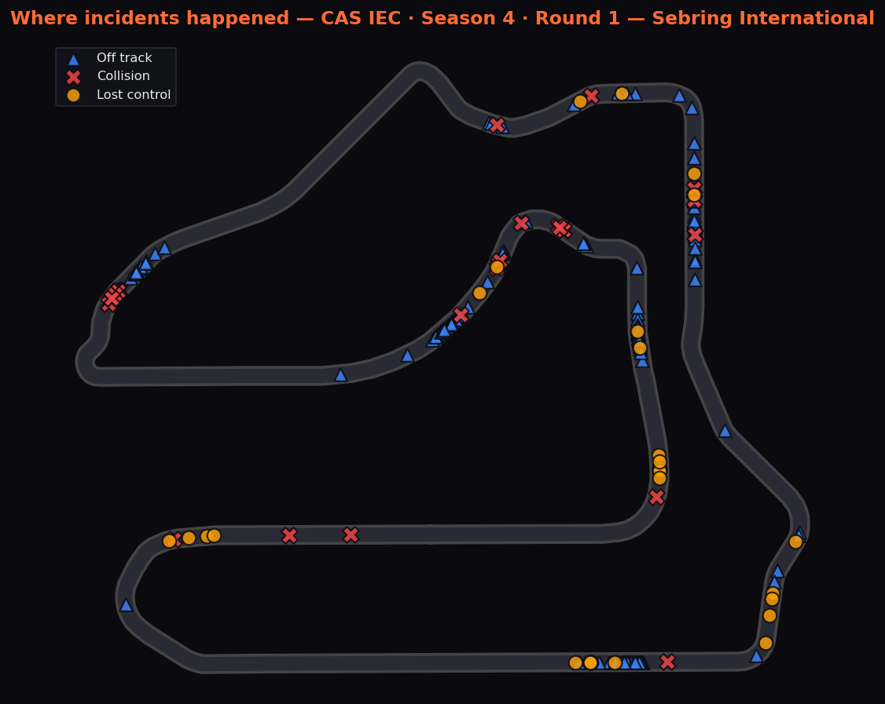
Alle 248 erfassten Incidents, projiziert auf die echte Sebring-Geometrie. Die dichten Cluster sind Kurve 17 auf die Start-Ziel-Gerade, die Hairpin und die betongesäumte Passage durch die Sunset Bend.
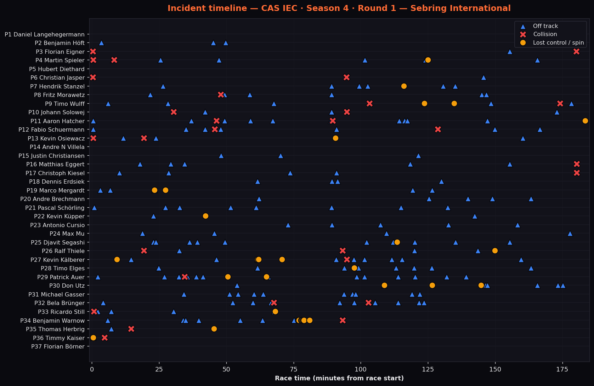
Erfasste Telemetrie-Ereignisse nach Fahrer und Rennzeit. Das sind die Erkennungen des Loggers, die unterschätzen — die Spalte „Inc“ in den Tabellen unten nutzt stattdessen die offiziellen iRacing-Punkte.
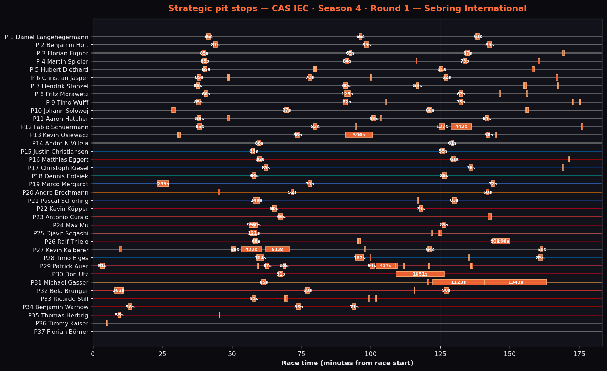
Der Dreistint-Rhythmus der Spitzenautos ist als drei saubere Spalten bei rund 40, 95 und 135 Minuten zu sehen. Die langen orangen Blöcke sind keine Strategie, sondern Katastrophen: Michael Gassers 1123 s und 1343 s, Don Utz’ 1051 s Reparatur, Kevin Osiewacz’ 596 s. Angegeben ist die Standzeit, nicht der Netto-Zeitverlust.
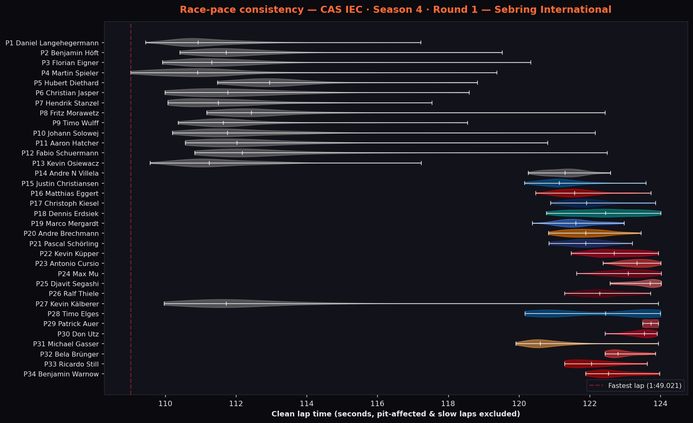
Verteilung der sauberen Runden, Boxen- und Langsamrunden herausgerechnet. Die Multiclass-Trennung ist deutlich: LMP2 zwischen 1:50 und 1:53, GT3 und Cup-Porsches zwischen 2:00 und 2:04. Diese zehn Sekunden sind das gesamte Verkehrsproblem in einem Bild.
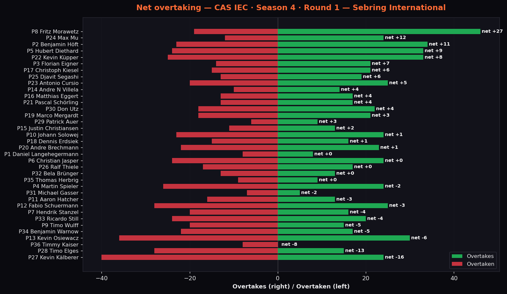
Grün = auf der Strecke gewonnene Plätze, rot = verlorene. In einem Dreiklassenfeld zählt das auch Überrundungen mit — also eher als Aktivität lesen denn als Rangliste der Überholer.
LMP2 — Datenansichten
Abstands- und Positionsdiagramme sind innerhalb der Klasse berechnet. Eine feldweite Variante wäre hier sinnlos: Der Führende überrundet den Porsche Cup etwa alle acht Runden, was die Skala in den Zehn-Minuten-Bereich zieht und das eigentliche Rennen unsichtbar macht.
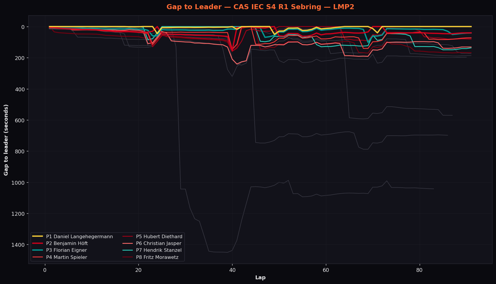
Die Spitzengruppe bleibt das ganze Rennen innerhalb einer Minute. Wo sich mehrere Linien gemeinsam bewegen, wird die ganze Klasse neutralisiert oder steckt im Verkehr; die Linien, die nach unten wegbrechen, sind die Autos, die durch Schäden und Reparaturen mehrere Runden verloren haben.
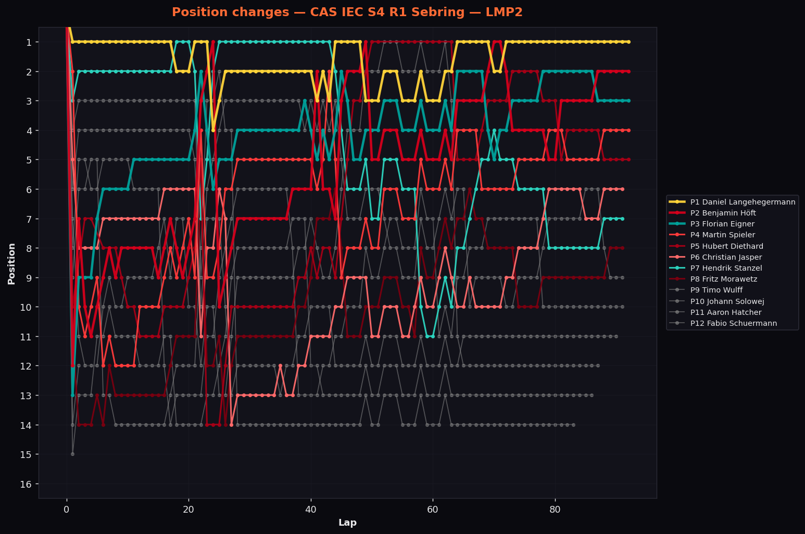
Höfts Aufstieg von Platz dreizehn ist die lange Diagonale. Hendrik Stanzel führt im mittleren Drittel eine Weile, bevor er zurückfällt; die Reihenfolge sortiert sich erst nach dem Restart.
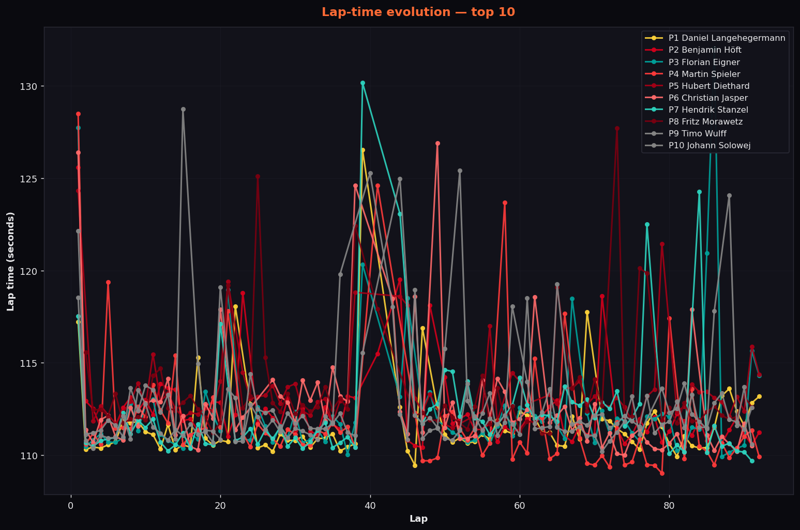
Runde für Runde für alle sechzehn LMP2. Boxenrunden und schwarze Flaggen erscheinen als einzelne Spitzen; die flachen, schmalen Verläufe gehören den Autos, die in der Führungsrunde blieben.
Vollständige Wertung — LMP2
| Pos | # | Team | Fahrer | Auto | Start | Rd. | Beste Runde | Abstand | Inc | Ergebnis |
|---|---|---|---|---|---|---|---|---|---|---|
| 1 | 294 | WS Racing eSports LMP2 I [CAS IEC] | Daniel Langehegermann / Fabian Buhl | Dallara P217 | 1 | 92 | 1:49.449 | — | 3 | Im Ziel |
| 2 | 17 | Alemannia Aachen eSports White | Benjamin Höft | Dallara P217 | 13 | 92 | 1:50.416 | +36.158 s | 5 | Im Ziel |
| 3 | 112 | WS Racing eSports LMP2 II [CAS IEC] | Florian Eigner | Dallara P217 | 10 | 92 | 1:49.923 | +44.846 s | 5 | Im Ziel |
| 4 | 221 | PWA E-Sports #BackFisch | Martin Spieler2 | Dallara P217 | 2 | 92 | 1:49.021 FL | +67.560 s | 31 | Im Ziel |
| 5 | 77 | DanKüchen Motorsport LMP2 | Manfred Baar / Hubert Diethard | Dallara P217 | 14 | 92 | 1:51.183 | +84.485 s | 12 | Im Ziel |
| 6 | 42 | GoSquadra eSports | Niklas Stapf / Christian Jasper | Dallara P217 | 6 | 91 | 1:49.993 | +1 Runde | 15 | Im Ziel |
| 7 | 19 | Neon Simsports Yellow | Hendrik Stanzel / Anders Saß | Dallara P217 | 3 | 91 | 1:49.694 | +1 Runde | 23 | Im Ziel |
| 8 | 169 | Jurassic Kart Racing T-Rex | Hendrik Schubert / Timo Wulff | Dallara P217 | 4 | 91 | 1:50.365 | +1 Runde | 28 | Im Ziel |
| 9 | 862 | NEON Simsports #62 | Fritz Morawetz | Dallara P217 | 15 | 91 | 1:51.188 | +1 Runde | 28 | Im Ziel |
| 10 | 84 | CAS-Tech Endurance Black | Johann Solowej / Andreas Leberer | Dallara P217 | 11 | 91 | 1:50.204 | +1 Runde | 12 | Im Ziel |
| 11 | 1 | Dat muss Kesseln! | Aaron Hatcher / Christian Kaschta | Dallara P217 | 8 | 91 | 1:50.569 | +1 Runde | 25 | Im Ziel |
| 12 | 101 | Alemannia Aachen eSports | Fabio Schuermann | Dallara P217 | 9 | 87 | 1:50.831 | +5 Runden | 21 | Im Ziel |
| 13 | 6 | Dat muss Kesseln! Team Werner | Kevin Osiewacz / Marvin Wortmann / Mario Severn | Dallara P217 | 7 | 86 | 1:49.567 | +6 Runden | 24 | Im Ziel |
| 14 | 3 | Pure Performance eSports 2 | Sascha Scheidt / Kevin Kälberer | Dallara P217 | 12 | 83 | 1:49.966 | +9 Runden | 24 | Im Ziel |
| 15 | 30 | Void Crown Racing Esport | Timmy Kaiser | Dallara P217 | 5 | 2 | — | +90 Runden | 5 | Ausfall |
| 16 | Atzen Motorsport Delta | — | Dallara P217 | 16 | 0 | — | — | 0 | Nicht gestartet |
GT3 — Datenansichten
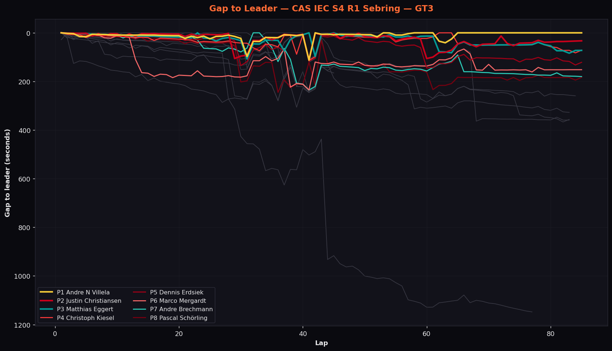
Michael Gasser kontrolliert die erste Hälfte, dann endet die Linie: schwarze Flagge, Berührung mit Eggert, Ausfall. Ab da wird Villela nicht mehr angegriffen.
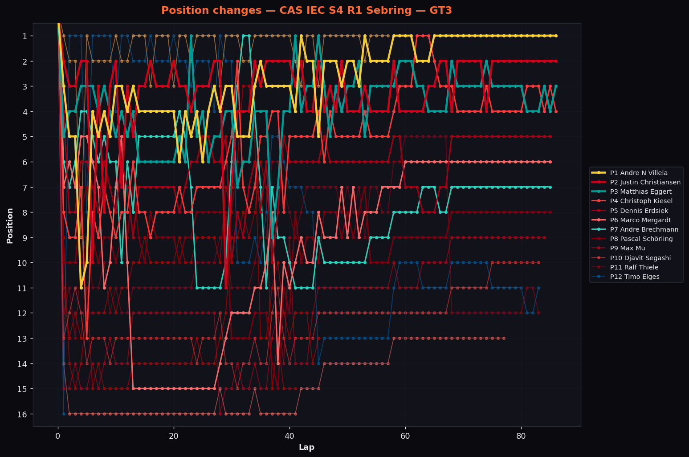
Pole-Setter Timo Elges fällt fast von Beginn an durch das Feld; die drei Podestautos tauschen die Plätze, bis Gassers Ausfall die Sache entscheidet.
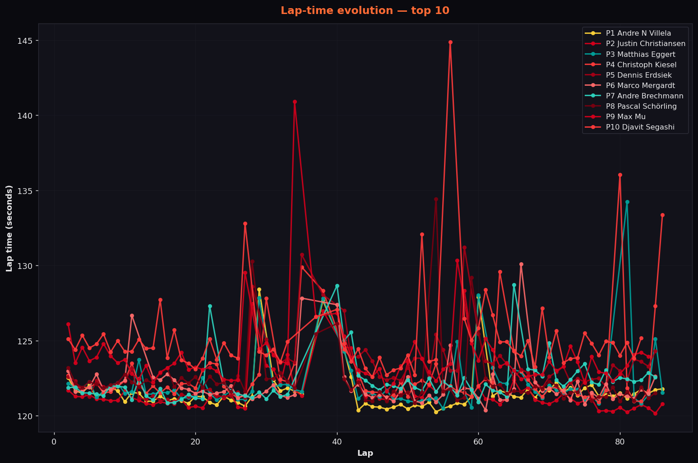
Sechzehn GT3-Autos Runde für Runde. Villelas Verlauf ist der flachste im Diagramm — drei Stunden ohne eine einzige Spitze ausserhalb der Boxenrunden.
Vollständige Wertung — GT3
| Pos | # | Team | Fahrer | Auto | Start | Rd. | Beste Runde | Abstand | Inc | Ergebnis |
|---|---|---|---|---|---|---|---|---|---|---|
| 1 | 827 | DaRoAn | Andre N Villela | Acura NSX GT3 EVO 22 | 4 | 86 | 2:00.259 | — | 2 | Im Ziel |
| 2 | 567 | Neon Simsports Blue | Jens Krämer / Justin Christiansen | BMW M4 GT3 EVO | 3 | 86 | 2:00.156 | +30.303 s | 10 | Im Ziel |
| 3 | 98 | JuHa Racing | Matthias Eggert / Jozef-Frederik Suto | Ferrari 296 GT3 | 6 | 86 | 2:00.552 | +75.472 s | 19 | Im Ziel |
| 4 | 146 | WS Racing eSports GT3 I [CAS IEC] | Christoph Kiesel | Ford Mustang GT3 | 9 | 86 | 2:00.894 | +88.494 s | 19 | Im Ziel |
| 5 | 87 | WS Racing eSports GT3 II [CAS IEC] | Dennis Erdsiek / Willem Haeger | Mercedes-AMG GT3 2020 | 5 | 85 | 2:00.775 | +1 Runde | 12 | Im Ziel |
| 6 | 54 | GermanPitbullzRacing Delta | Marco Mergardt | BMW M4 GT3 EVO | 8 | 85 | 2:00.371 | +1 Runde | 13 | Im Ziel |
| 7 | 83 | CAS-Tech Endurance Red | Florian Brechmann / Andre Brechmann | McLaren 720S GT3 EVO | 7 | 85 | 2:00.837 | +1 Runde | 6 | Im Ziel |
| 8 | 16 | Jurassic Kart Racing Brachiosaurus | Pascal Schörling | BMW M4 GT3 EVO | 11 | 85 | 2:00.842 | +1 Runde | 16 | Im Ziel |
| 9 | 35 | Neon Simsports Purple | Max Mu | Porsche 911 GT3 R (992) | 16 | 84 | 2:01.627 | +2 Runden | 15 | Im Ziel |
| 10 | 583 | Neon Simsports Green | Djavit Segashi / Fabian Paul2 | Porsche 911 GT3 R (992) | 14 | 83 | 2:02.578 | +3 Runden | 21 | Im Ziel |
| 11 | 245 | WS Racing eSports GT3 III [CAS IEC] | Ralf Thiele / Alex Turek | Porsche 911 GT3 R (992) | 13 | 83 | 2:01.293 | +3 Runden | 9 | Im Ziel |
| 12 | 29 | Jurassic Kart Racing Velociraptor | Andreas Schulze / Timo Elges | BMW M4 GT3 EVO | 1 | 83 | 2:00.172 | +3 Runden | 27 | Im Ziel |
| 13 | 13 | Neon Simsports White | Patrick Makovszky / Patrick Auer | Porsche 911 GT3 R (992) | 15 | 77 | 2:03.491 | +9 Runden | 39 | Im Ziel |
| 14 | 347 | Flying Arrow Racing | Michael Gasser | McLaren 720S GT3 EVO | 2 | 57 | 1:59.912 FL | +29 Runden | 17 | Ausfall |
| 15 | 18 | Neon Simsports Orange | Ricardo Still / Florian Roessler | Ferrari 296 GT3 | 10 | 45 | 2:01.290 | +41 Runden | 24 | Ausfall |
| 16 | 242 | Neon Simsports Pink | Benjamin Warnow | Ferrari 296 GT3 | 12 | 41 | 2:02.049 | +45 Runden | 20 | Ausfall |
Porsche Cup — Datenansichten
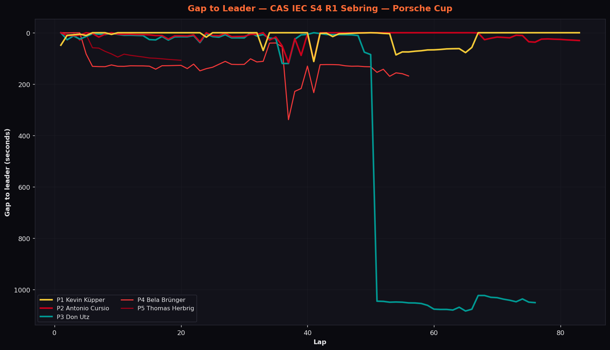
Küpper und Cursio tauschen die Klassenführung in der Rennmitte mehrfach — die beiden Linien kreuzen die Nulllinie immer wieder. Der Absturz bei Runde 50 ist Don Utz’ Reparatur.
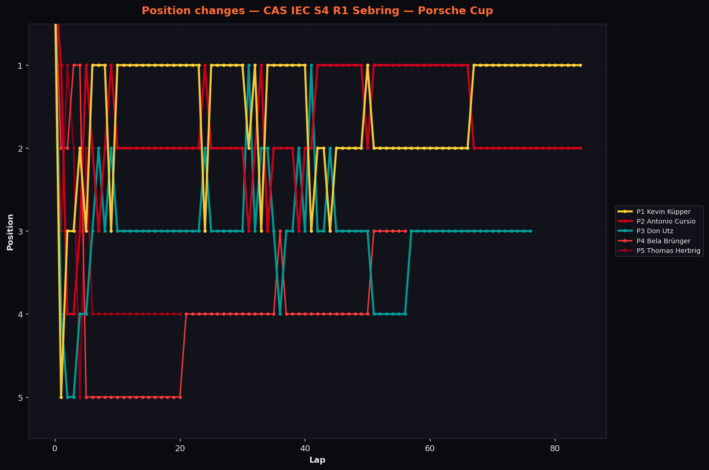
Fünf Autos, und ab Halbdistanz nur noch drei im Rennen. Die Führung wechselt hier häufiger als in den beiden grossen Klassen.
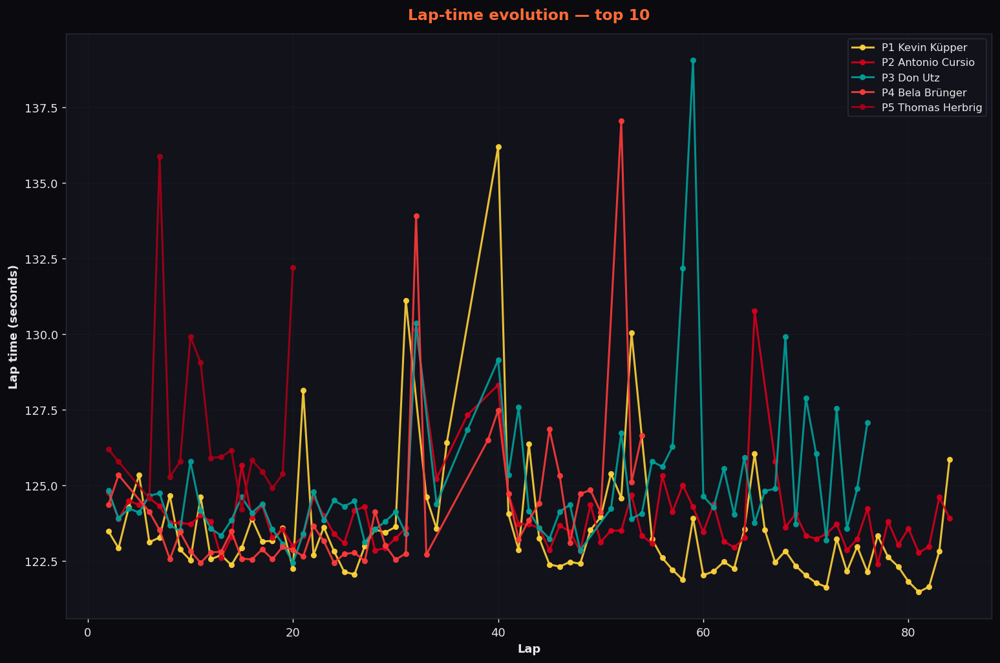
Die Cup-Autos fahren das engste Rundenzeitband der drei Klassen — keine BOP, identisches Material, die Unterschiede sind reine Fahrerleistung.
Vollständige Wertung — Porsche Cup
| Pos | # | Team | Fahrer | Auto | Start | Rd. | Beste Runde | Abstand | Inc | Ergebnis |
|---|---|---|---|---|---|---|---|---|---|---|
| 1 | 81 | Alemannia Aachen eSports Yellow | Kevin Küpper | Porsche 911 Cup (992.2) | 3 | 84 | 2:01.469 FL | — | 16 | Im Ziel |
| 2 | 173 | CAS-Tech Performance Blue | Thomas Kuebler / Antonio Cursio | Porsche 911 Cup (992.2) | 1 | 84 | 2:02.378 | +30.168 s | 10 | Im Ziel |
| 3 | 555 | CAS-Tech Performance Green | Don Utz | Porsche 911 Cup (992.2) | 5 | 76 | 2:02.434 | +8 Runden | 18 | Im Ziel |
| 4 | 919 | KEK Racing | Maxim Voigt / Bela Brünger | Porsche 911 Cup (992.2) | 2 | 56 | 2:02.432 | +28 Runden | 34 | Ausfall |
| 5 | 067 | CAS-Tech Performance Yellow | Thomas Herbrig | Porsche 911 Cup (992.2) | 4 | 20 | 2:04.195 | +64 Runden | 10 | Ausfall |
Rennhighlights
Der Saisonauftakt wurde ebenso sehr davon entschieden, was kaputtging, wie davon, was gefahren wurde. WS Racing eSports führte von der Gesamtpole und wurde in der LMP2 nie ernsthaft angegriffen, aber fast alles dahinter war von Ausfällen geprägt: sechs gezählte Wheelbase-Defekte im Feld, ein Fahrer, der im dritten Gang festhängt und mitten im Stint übergeben muss, wiederholte Verbindungsabbrüche und ein führender GT3, der eine Stunde Arbeit an Track Limits verschenkte. Im Porsche Cup wurde Don Utz beim Platzmachen für ein schnelleres Auto abgeschossen und kam trotzdem zurück auf die Strecke, um acht Runden zurück Dritter der Klasse zu werden.
Dann wurde die Rennleitung selbst zur Geschichte. Bei etwa einem Drittel Restdistanz stürzte die Maschine ab, auf der sowohl iRacing als auch die Rennleitungssoftware liefen. Beim Neustart zählte die Software die Incidents jedes Autos neu und addierte sie zum bereits Vorhandenen — insgesamt 31 schwarze Flaggen, sieben davon innerhalb von neun Sekunden, dazu ein Full Course Yellow, das sich nicht zurücknehmen liess. Einige Autos fuhren Durchfahrten, die sie nie schuldeten; eines schuldete eine und fuhr sie nie. Statt das Rennen zu wiederholen, rekonstruierten die Sportkommissare es aus dem offiziellen Ergebnis, dieser Telemetrie-Aufzeichnung, einem kompletten Replay-Durchlauf und einer unabhängigen Auswertung und wendeten pro unberechtigter Durchfahrt pauschal 13 Sekunden an. Das Ergebnis änderte sich um genau zwei Positionen.
Quelle: iRacing-Eventresult (Subsession 88492179). „Inc“ zeigt offizielle iRacing-Incident-Punkte, nicht die Ereigniszahl des Telemetrie-Logs. Diagramme und 2D-Replay stammen aus der iCASControl-Telemetrie-Aufzeichnung; Abstands- und Positionsdiagramme sind je Klasse neu berechnet. Die Wertung enthält die Durchfahrts-Korrektur der Rennleitung — in der LMP2 ist Jurassic Kart Racing T-Rex als Achter und NEON Simsports #62 als Neunter gewertet. Offizielle Punkte und Team of the Day aus dem CAS League Scoring; Erzählung aus dem CAS-Community-Twitch-Stream.